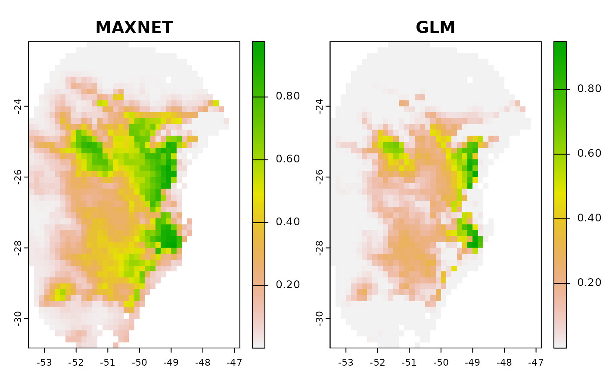

predict_selected.RdThis function predicts selected models for a single set of new data
using either maxnet or glm It provides options to save the
output and compute consensus results (mean, median, etc.) across
replicates and models.
predict_selected(models, raster_variables, mask = NULL, write_files = FALSE,
write_replicates = FALSE, out_dir = NULL,
consensus_per_model = TRUE, consensus_general = TRUE,
consensus = c("median", "range", "mean", "stdev"),
extrapolation_type = "E", var_to_clamp = NULL,
type = NULL, overwrite = FALSE, progress_bar = TRUE)an object of class fitted_models returned by the
fit_selected() function.
a SpatRaster or data.frame of predictor variables.
The names of these variables must match those used to calibrate the models or
those used to run PCA if do_pca = TRUE in the prepare_data()
function.
(SpatRaster, SpatVector, or SpatExtent) spatial object used to mask the variables before predict. Default is NULL.
(logical) whether to save the predictions (SpatRasters or data.frame) to disk. Default is FALSE.
(logical) whether to save the predictions for each
replicate to disk. Only applicable if write_files is TRUE. Default is
FALSE.
(character) directory path where predictions will be saved.
Only relevant if write_files = TRUE.
(logical) whether to compute consensus (mean, median, etc.) for each model across its replicates. Default is TRUE.
(logical) whether to compute a general consensus across all models. Default is TRUE.
(character) vector specifying the types of consensus to
calculate across replicates and models. Available options are "median",
"range", "mean", and "stdev" (standard deviation). Default is
c("median", "range", "mean", "stdev").
(character) extrapolation type of model. Models can be transferred with three options: free extrapolation ('E'), extrapolation with clamping ('EC'), and no extrapolation ('NE'). Default = 'E'. See details.
(character) vector specifying which variables to clamp or
not extrapolate. Only applicable if extrapolation_type is "EC" or "NE".
Default is NULL, meaning all variables will be clamped or not extrapolated.
(character) the format of prediction values. For maxnet models,
valid options are "raw", "cumulative", "logistic", and "cloglog". For
glm models, valid options are "response" and "raw". If NULL (default),
the function uses "cloglog" for maxnet models and "response" for glm
models.
(logical) whether to overwrite SpatRasters if they already
exist. Only applicable if write_files = TRUE. Default is FALSE.
(logical) whether to display a progress bar during processing. Default is TRUE.
A list containing SpatRaster or data.frames predictions for each replicate, long with the consensus results for each model and the overall general consensus.
When predicting to areas where the variables are beyond the lower or upper
limits of the calibration data, users can choose to free extrapolate the
predictions (extrapolation_type = "E"), extrapolate with clamping
(extrapolation_type = "EC"), or not extrapolate (extrapolation_type = "NE").
When clamping, the variables are set to minimum and maximum values
established for the maximum and minimum values within calibration data. In
the no extrapolation approach, any cell with at least one variable listed in
var_to_clamp falling outside the calibration range is assigned a suitability
value of 0.
# Import variables to predict on
var <- terra::rast(system.file("extdata", "Current_variables.tif",
package = "kuenm2"))
# Example with maxnet
# Import example of fitted_models (output of fit_selected())
data("fitted_model_maxnet", package = "kuenm2")
# Predict to single scenario
p <- predict_selected(models = fitted_model_maxnet, raster_variables = var)
#>
|
| | 0%
|
|=================================== | 50%
|
|======================================================================| 100%
# Example with GLMs
# Import example of fitted_models (output of fit_selected())
data("fitted_model_glm", package = "kuenm2")
# Predict to single scenario
p_glm <- predict_selected(models = fitted_model_glm, raster_variables = var)
#>
|
| | 0%
|
|======================================================================| 100%
# Plot predictions
terra::plot(c(p$General_consensus$median, p_glm$General_consensus$median),
col = rev(terrain.colors(240)), main = c("MAXNET", "GLM"),
zlim = c(0, 1))
